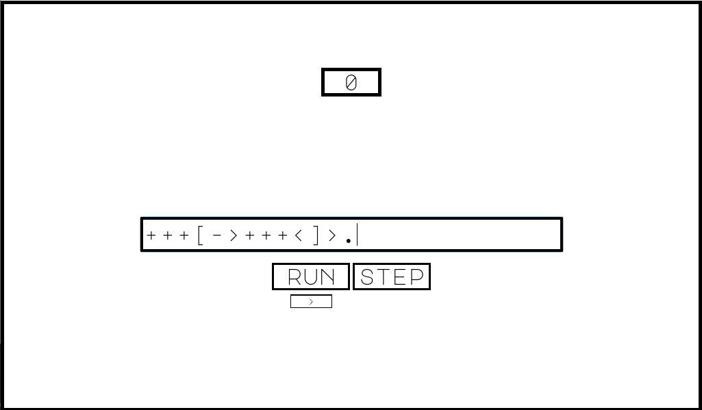

Brainstuck
Published 27. December 2020
Brainstuck is a game I'm developing, that's highly inspired by Zachtronics' TIS-100 where you code Assembly. I've messed around with the idea for a game about learning Brainfuck for a long time, but only came up with a design for it when I bought TIS-100 last year.
In Brainstuck the user programs in Brainfuck to output values from certain test cases. To go to the next level, the user has to complete the current level by outputting the right values expected by the test cases and description given with the level. This is currently what a level looks like in Brainstuck:

For the creation of Brainstuck I decided to go with the Godot Engine. I did this for multiple reasons, it's open-source, free, easy cross-platform compilation, outputted executable file is relatively small in size, easy to use GUI elements, support for the C language with GDNative if needed and because I want to learn it.
The current plan is to release Brainstuck on Steam and Itch.io, then make it open-source and playable on the web after a while. I'm still deciding whether to make it open-source from the start, but still release it on Steam and Itch (like Mindustry has done).
Share on Twitter